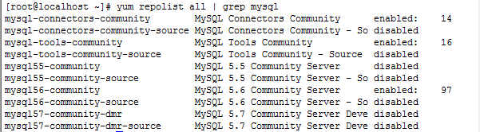
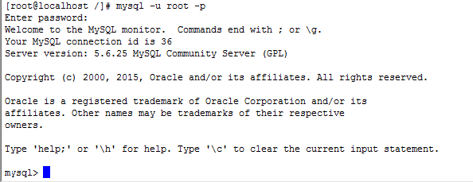
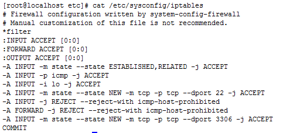

前言
此文档主要介绍的是通过yum 在CentOS6.6安装MySQL5.6.25。注意每个MySQL的版本在不同的系统上安装步骤可能有些不同。所以不能保证按照此方法能保证其他版本安装成功。
下载MySQL Yum Repository
为什么需要下载呢？注意原因是在CentOS Yum Repository还没有收入MySQL最新版本的安装库。
针对每个每个系统所下载的Yum Repository是不一样所以我们需要对着下载，今天说的是CentOS6.6所以我们只需要下载如下包。1
2
3
4
5
6shell wget http://dev.mysql.com/get/mysql-community-release-el6-5.noarch.rpm
其他版本对照下载
Red Hat Enterprise Linux 7 / Oracle Linux 7
shell wget http://dev.mysql.com/get/mysql-community-release-el7-5.noarch.rpm
Red Hat Enterprise Linux 5 / Oracle Linux 5
shell wget http://dev.mysql.com/get/mysql-community-release-fc22-5.noarch.rpm
安装MySQL Yum Repository
1 | shell rpm -Uvh mysql-community-release-el6-5.noarch.rpm |
也可以通过yum安装1
shell yum localinstall platform-and-version-specific-package-name.rpm
验证是否安装成
1 | 查找启用的MySQL Yum Repository |

禁用mysql57-community-dmr1
shell yum-config-manager – disable mysql57-community-dmr
启用mysql56-community1
shell yum-config-manager -- enable mysql56-community
备注：
Yum Repository 的配置文件在linux的目录是/etc/yum.repos.d/
安装MySQL
1 | shell yum install mysql-server |
启动MySQL 服务
1 | shell service mysqld start |
注意针对低版本的使用service mysql start
查看运行状态1
2shell service mysqld status
mysqld (pid 23192) is runing...
表示启动成功
如果不存在/etc/my.cnf文件需要复制/usr/share/mysql/my-default.cnf一份到/etc/my.cnf下1
shell cp /usr/share/mysql/my-default.cnf /etc/my.cnf
当然不配置也不会影响启动在/etc目录下的文件都是系统启动第一读取目录其次如果没有找到再去对应的目录下读取。
目录介绍
数据库目录：/var/lib/mysql
配置文件目录：/usr/share/mysql
命令目录：/usr/bin mysql*
修改MySQL root用户密码
1 | shell mysql admin –u root password ‘newpassword’ |
登录MySQL

设置root用户远程访问1
2shell GRANT ALL PRIVILEGES ON *.* TO 'root'@'172.16.%' IDENTIFIED BY 'password' WITH GRANT OPTION;
shell flush privileges;//刷新立即生效
开启防火墙的3306端口
在/etc/sysconfig/iptables文件中添加如下内容
1
-A INPUT -m state --state NEW -m tcp -p tcp --dport 3306 -j ACCEPT
然后保存，并关闭该文件，在终端内运行下面的命令，刷新防火墙配置：1
shell service iptables restart
如同通过以上步骤还不能成功链接执行下面的语句关闭防火墙1
service iptables stop
CentOS 7中默认使用Firewalld做防火墙，所以修改iptables后，在重启系统后，根本不管用。
Firewalld中添加端口方法如下：1
2firewall-cmd --zone=public --add-port=3306/tcp --permanent
firewall-cmd --reload